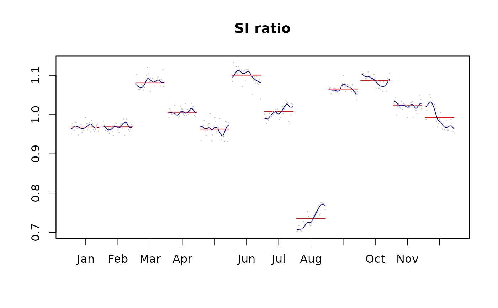

SI-ratio
Usage
siratio(x, ...)
siratioplot(
x,
labels = NULL,
add = FALSE,
box = TRUE,
col.s = "darkblue",
col.i = "gray",
col.mean = "red",
cex.i = 0.1,
lwd.s = par("lwd"),
lwd.mean = lwd.s,
main = "SI ratio",
xlab = NULL,
ylab = NULL,
xlim = NULL,
ylim = NULL,
start = NULL,
end = NULL,
...
)
ggsiratioplot(
x,
labels = NULL,
col.s = "darkblue",
col.i = "gray",
col.mean = "red",
cex.i = 0.5,
lwd.s = 1,
lwd.mean = lwd.s,
main = "SI ratio",
xlab = NULL,
ylab = NULL,
start = NULL,
end = NULL,
...
)Arguments
- x
input model or data.
- ...
unused parameters.
- labels
labels.
- add
boolean indicating whether a new plot should be drawn.
- box
boolean indicating a box around the current plot should be drawn.
- col.s, col.i, col.mean
colors of the different components.
- cex.i, lwd.s, lwd.mean
graphical parameters.
- main, xlab, ylab
title, X and Y axis label.
- xlim, ylim
X and Y axis limits.
- start, end
first and last dates plotted.
Examples
x <- RJDemetra::x13(ipi_c_eu[,"FR"])
siratioplot(x)

ggsiratioplot(x)